21 March 2022 • posted by Maha
Of hikes and mountains — Ventanayoc
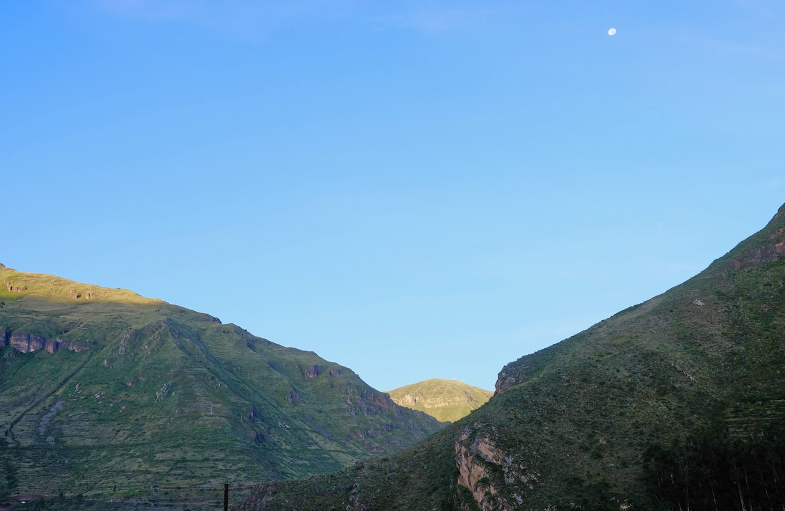
As our eyes opened this morning, the view outside of the window was the usual breathtaking layering of mountains but this time with a light blue coloured sky serving as the background. The first words uttered then, before any good morning, were "Let’s go for a hike".
The idea of doing this hike was already in our minds for the last couple of days and with such beautiful weather conditions outside, this was definitely the perfect day for it.
The Cerro Ventanayoc is one of the first mountains we see when we open our eyes every morning. Sometimes surrounded by passing clouds up high, sometimes showing all its vegetation and patches of forests. Before start we didn’t know a whole lot about the hike itself besides the average length and that it was a moderate level hike.
After enjoying a tasty breakfast of local bread, omelette, fruits and coffee, we made ourselves ready and, from our front door, we started our hike at 9:30 in the morning.
The walk to the beginning of the trail was perhaps the hardest part, due to its very steep hard mud paths through narrow forests. At around 11:00 we reached the small village of Ampay, which was where our trail up to Ventanayoc started.
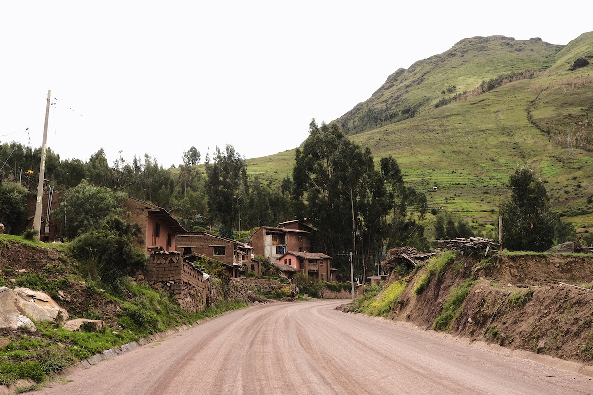
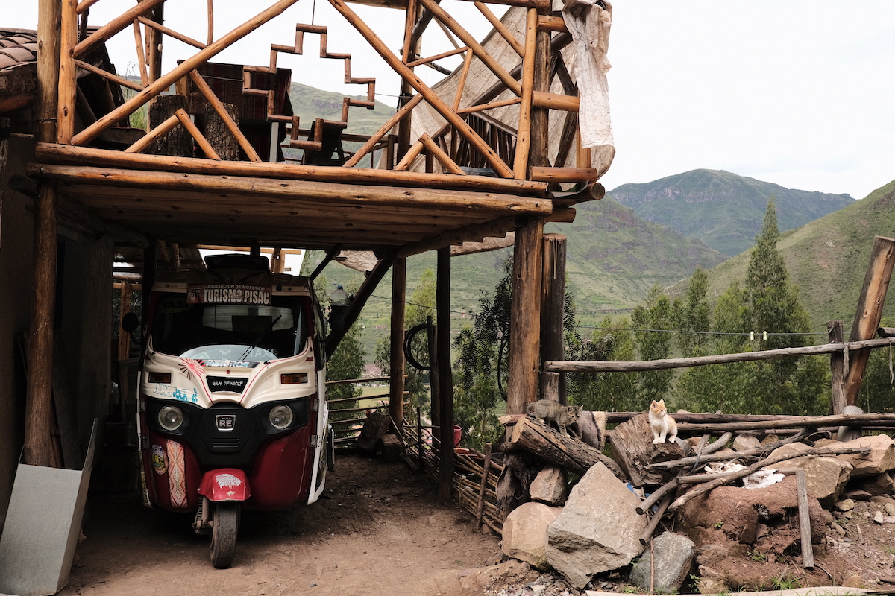
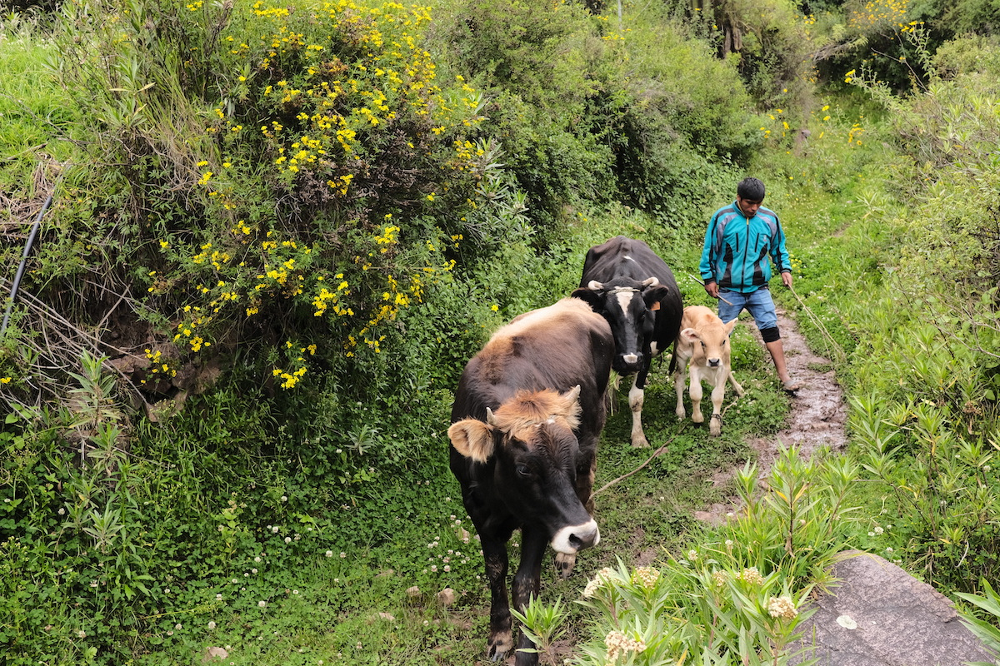
By now the sky was a bit cloudy which helped against the heat and allowed some fresh air to help as the altitude started to hit us. We passed by dry lands, small patches of forests, burnt forests, rocky paths and narrow streams of water until we realised we were not using the "usual" trail. Still, this trail lead us to an amazing vantage point facing our village, the sacred valley and the Urubamba river where we made camp for the next couple of hours.
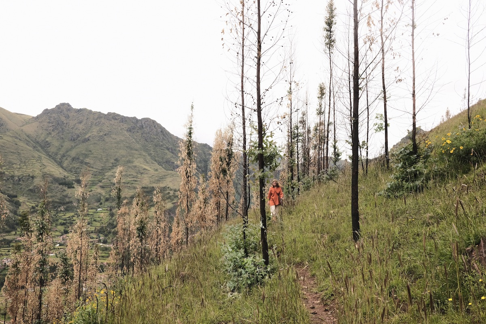
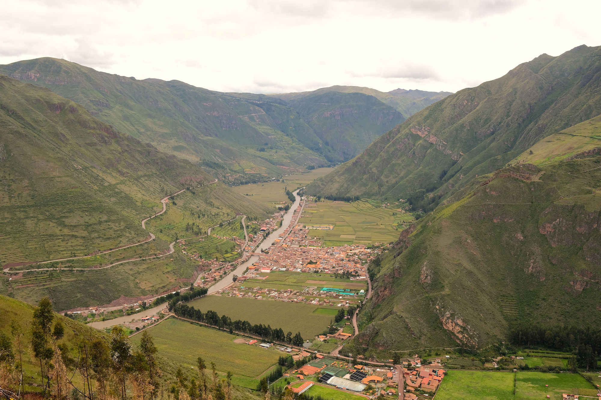
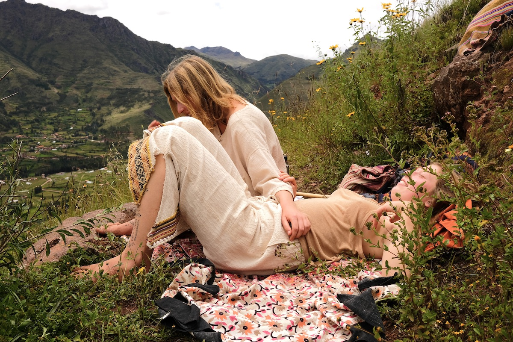
At around 12:00 the skies had cleared up and the sun started to hit hard on our backs. We shared some tangerines, nuts and water and sat there taking in the breathtaking views all around us. Appreciating the silence, only being broken by donkey screams down the valley.
Up in the mountains the time seemed to pass very slowly and the gravity was definitely pushing us towards the mountain surface. The calmness of that environment went straight into our bodies, the feeling of weightlessness took over and in that moment we become infinite.
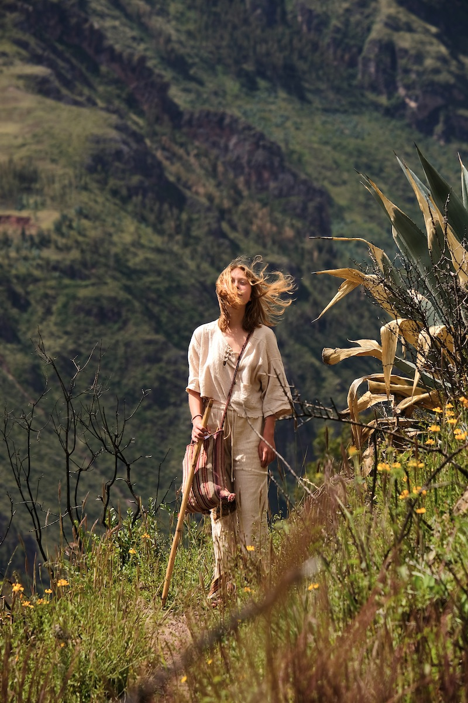
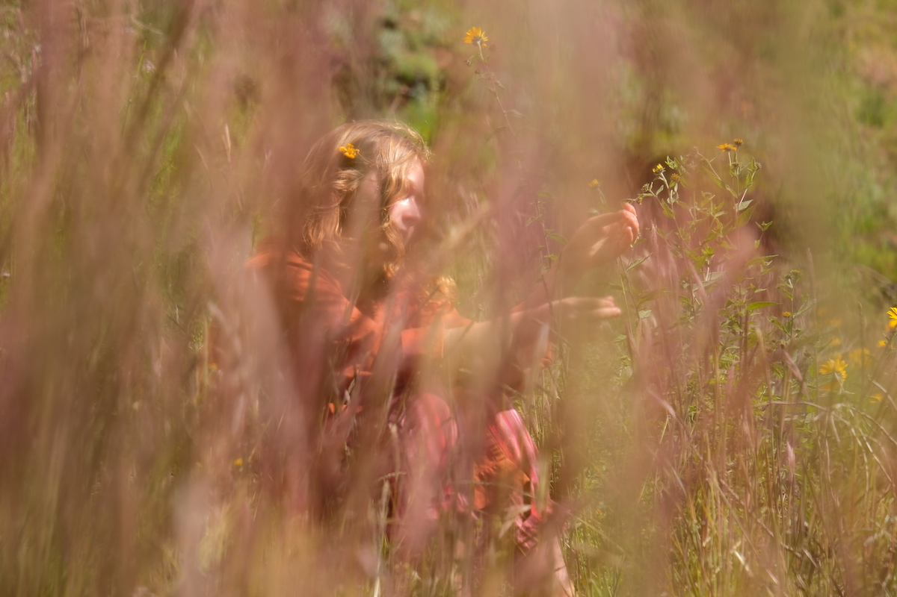
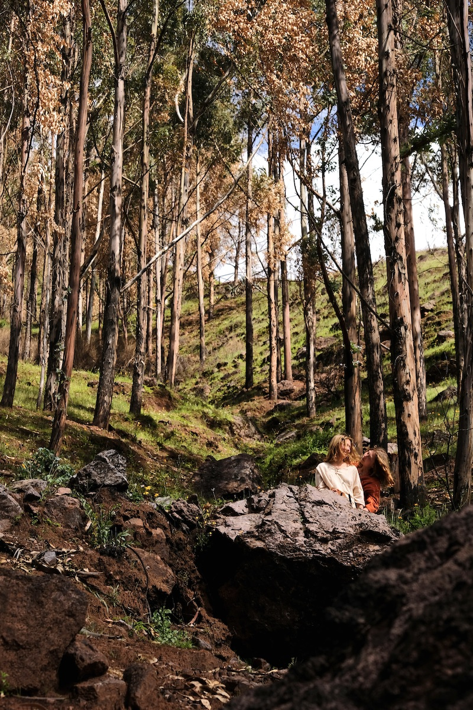
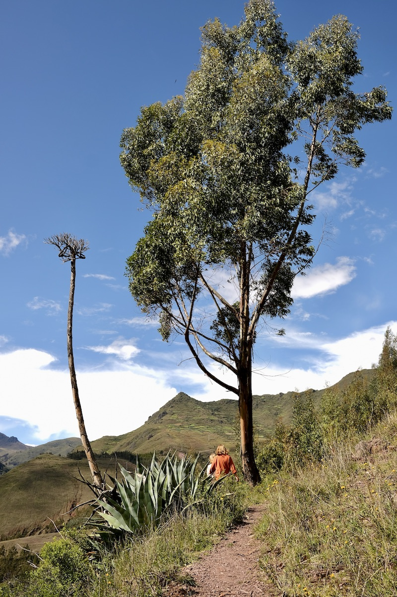
On the way back we took a slightly different path, going a bit more up, passing by a small view point and then leading to a much better structured path, with signs and such. By then, the weather started to turn and dark gray clouds could be seen approaching. It didn’t take too long until it reached us, but luckily with a light rain forming a beautiful rainbow to conclude our first hike in Peru.
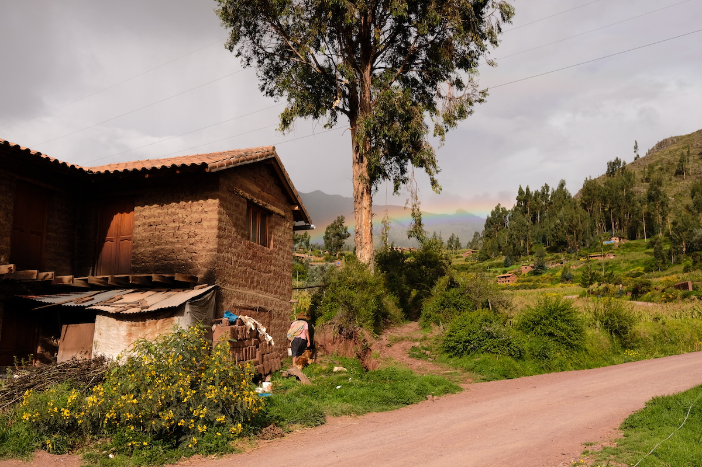